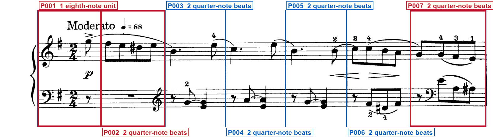
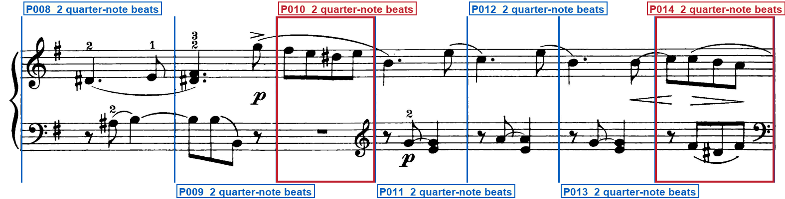
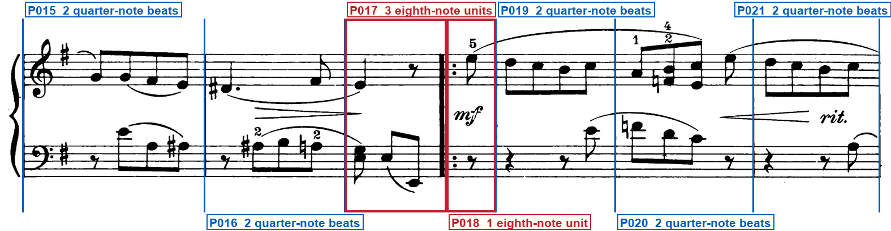
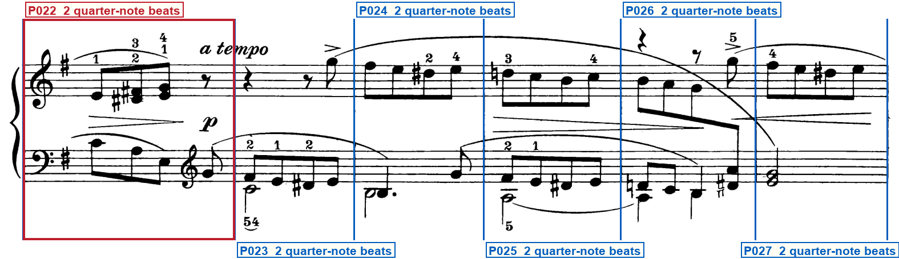
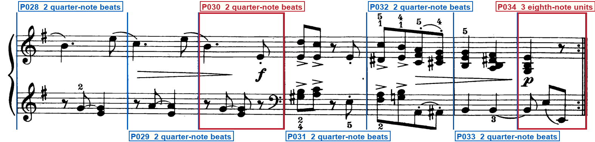

Printed-frame check
schumann_op68_16_first_loss
Blue regions are silent: verify that they are ordinary bars. Red regions have one compact label directly below their system. Blue vertical lines must sit on printed barlines. Labels must remain outside the music.
System 1 — 7 printed regions

- P001 — OPENING SIGNATURE · PICKUP — At the left of the system · After the time signature
- P002 — CLEF CHANGE — Immediately before the right barline · staff 2: bass clef → treble clef; glyph Immediately before the right barline of P002; effective P003; first governed event: The left-hand eighth rest of P003
- P007 — CLEF CHANGE — After the opening eighth rest · staff 2: treble clef → bass clef; glyph After the opening eighth rest of P007, before the D-sharp to F-sharp; effective P007; first governed event: The left-hand D-sharp to F-sharp eighths of P007
System 2 — 7 printed regions

- P010 — CLEF CHANGE — Immediately before the right barline · staff 2: bass clef → treble clef; glyph Immediately before the right barline of P010; effective P011; first governed event: The left-hand eighth rest of P011
- P014 — CLEF CHANGE · CAUTIONARY CLEF — Immediately before the right barline · Immediately before the right system barline · staff 2: treble clef → bass clef; glyph Immediately before the right system barline of P014; effective P015; first governed event: The left-hand eighth rest of P015
System 3 — 7 printed regions

- P017 — PARTIAL BAR — Three eighth-note units before the forward repeat
- P018 — PICKUP · REPEAT START — After the forward-repeat barline · At the left barline
System 4 — 6 printed regions

- P022 — CLEF CHANGE — After the third left-hand eighth · staff 2: bass clef → treble clef; glyph After the third left-hand eighth of P022, immediately before the fourth flagged eighth; effective P022; first governed event: The fourth flagged left-hand eighth of P022
System 5 — 7 printed regions

- P030 — CLEF CHANGE — Immediately before the right barline · staff 2: treble clef → bass clef; glyph Immediately before the right barline of P030; effective P031; first governed event: The forte dyads of P031
- P034 — PARTIAL BAR · REPEAT END · FINAL BARLINE — Three eighth-note units · At the right barline · At the right barline
Full clef inventory
Staff 1 opens in treble and staff 2 in bass. Six later left-hand clefs are printed: treble before the P002/P003 barline, bass after the opening rest of P007, treble before the P010/P011 barline, cautionary bass before the system 2 close, treble inside P022 after three left-hand eighths, and bass before the P030/P031 barline. No other clef changes are printed.
Opening clefs
- Staff 1: treble clef — Opening of system 1
- Staff 2: bass clef — Opening of system 1
Printed clef changes (6)
- P003, staff 2: treble clef — P002, staff 2: bass clef to treble clef immediately before the right barline; first event in P003
- P007, staff 2: bass clef — P007, staff 2: treble clef to bass clef after the opening eighth rest
- P010, staff 2: treble clef — P010, staff 2: bass clef to treble clef immediately before the right barline; first event in P011
- P014, staff 2: bass clef — P014, staff 2: treble clef to bass clef cautionary immediately before the right system barline; first event in P015
- P022, staff 2: treble clef — P022, staff 2: bass clef to treble clef after the third left-hand eighth
- P030, staff 2: bass clef — P030, staff 2: treble clef to bass clef immediately before the right barline; first event in P031
Verifier notes and special checks
Isolation confirmed: only request.json, the hashed print PDF/page/system crops, and the hashed proposed print-only frame artifacts were read. No readers, LEGATO, source observations, candidates, MusicXML, provenance, disagreements, Astra reviews, archives, or prior musical verdicts were accessed. The print is thirty-four physical regions on one page in five systems (seven plus seven plus seven plus six plus seven), two-four throughout, one sharp. System 1 opens with a one-eighth-note pickup after the signatures. System 3 has a three-eighth-note incomplete close, then a forward-repeat barline with dots to the right only on both staves, then a one-eighth-note pickup. System 5 closes with a three-eighth-note incomplete bar and a backward repeat (dots to the left of a thick-thin close). Six later left-hand clefs are printed; none are missing or extra. Proposed region counts, capacities, clef machine fields, and repeat sides match the print.
- System 1 P001: Is the opening region a one-eighth-note pickup after the signatures? Yes. The pickup G sits after the two-four time signature, with the first interior barline at x=322.
- System 1 P002/P003 staff 2: Is the left-hand treble printed before or after the P002/P003 barline? Before. Glyph centre x=506 lies in P002 (322-527); the barline is at x=527; the first left-hand rest of P003 follows.
- System 3 P017/P018: Are repeat dots present on both sides of the thick-thin barline? No. Dots are on the right only on both staves. This is a forward repeat, not a combined repeat.
- System 3 P017: Is P017 an incomplete close of three eighth-note units? Yes. Right-hand quarter plus eighth rest, then the forward-repeat barline.
- System 4 P022 staff 2: Is the left-hand treble inside P022 after three bass-clef eighths? Yes. Glyph centre x=331, after the third eighth and before the fourth flagged eighth.
- System 5 P034: Does the final barline show backward-repeat dots on the left of a thick-thin close? Yes. Dots to the left only, then thin and thick lines. No dots to the right.
Your verification checks
- Do all staves, notes, rests, slurs and other musical marks fit completely inside the page?Expected: Yes
- Do the blue lines match every printed barline, giving 34 printed regions?Expected: Yes
- Do the compact red labels state every visible repeat, ending, route mark, special barline, partial, meter/key change and clef change—and are all unlabeled blue regions truly normal?Expected: Yes
- Are all region labels outside the printed system, with no ending, repeat, clef, note or mark hidden?Expected: Yes
- Does the clef list state each opening clef and every visible clef change?Expected: Yes
Approve only after every answer is Yes. Tell the Orchestrator: Frame approved or Frame rejected with the system number.